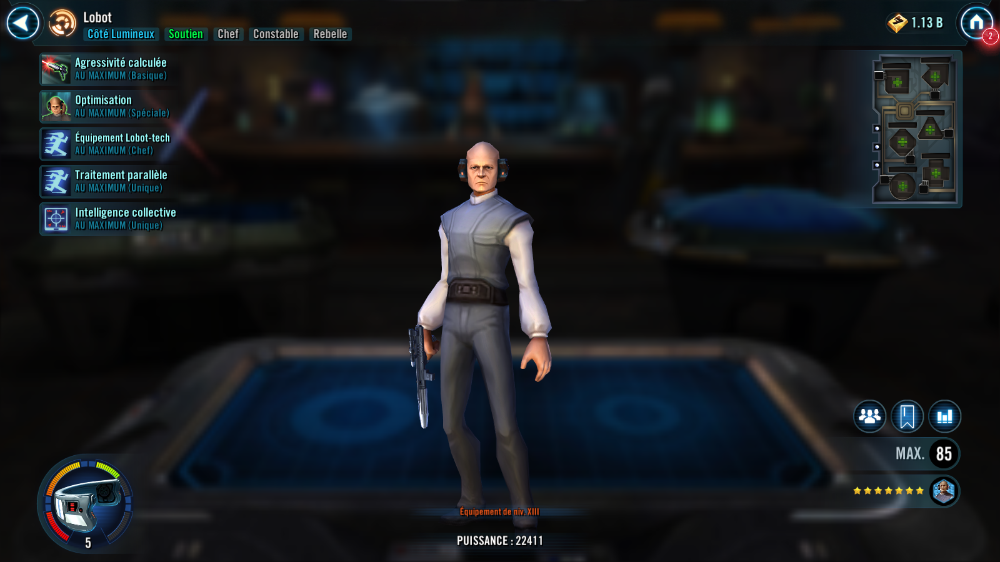
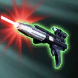
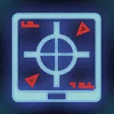

Lobot
Rebel Support that can reliably inflict Defense Down, clear allied debuffs, and speed up allied Droids
Rebel Support that can reliably inflict Defense Down, clear allied debuffs, and speed up allied Droids


Deal Physical damage to target enemy and inflict Defense Down for 2 turns. If they are Target Locked, Lobot gains Foresight for 1 turn. If the ally in the Leader slot is a Light Side Droid, all Light Side Droid allies gain Defense Up for 1 turn and, if the enemy already had Defense Down, inflict them with Target Lock for 2 turns.
Dispel all debuffs from all allies. For each debuff dispelled this way, all allies recover 7% Health. Lobot gains 8% Turn Meter for each active Droid ally and other Droid allies gain half that amount.

Droid allies gain 10% Potency and 25 Speed.
Lobot gains 5.5% Speed and 5.5% Tenacity for each active Droid ally. Whenever a Light Side Droid ally without Foresight gains Foresight, a random Light Side Droid ally without Foresight gains Foresight for 1 turn (limit once per turn). Whenever a Light Side Droid ally has a debuff dispelled on them, they gain 5.5% Critical Damage and 5.5% Potency (stacking) for each debuff dispelled for 2 turns.
Whenever a Light Side Droid ally with less than 100% Turn Meter gains bonus Turn Meter, Lobot gains Speed Up for 1 turn. Whenever Lobot uses a Basic ability while he has Speed Up, he has +55% Critical Chance and removes 5.5% Turn Meter from target enemy.

If the ally in the Leader slot is a Light Side Droid Leader, Lobot gains the Droid tag for the rest of the battle and Droid allies gain 10% Potency and 25 Speed. Whenever a Light Side Droid ally is inflicted with a debuff, inflict Target Lock on the enemy that inflicted the debuff for 1 turn, which can't be resisted.
While Light Side Droid allies have Foresight, they have +50% Critical Chance and whenever they use a Basic ability, inflict Speed Down on the target enemy for 1 turn. Whenever another Light Side Droid ally uses a Basic ability against a Target Locked enemy they deal 35% more damage, and Lobot assists.